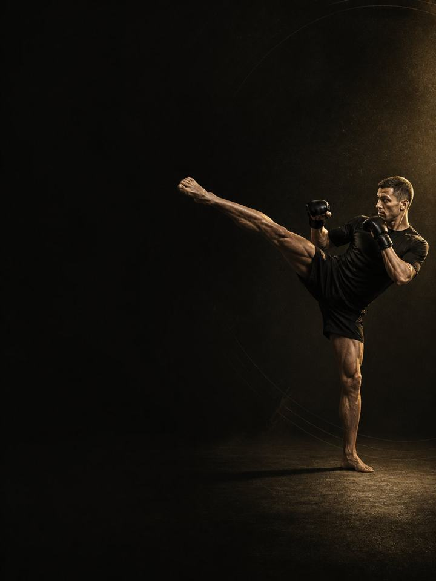

Striking · Compete
Hold the strength and power camp tries to take, and arrive on fight night with it intact.
- Built forboxing, Muay Thai and MMA athletes in camp and fight season
- Training days2 gym days a week, 1 short session in fight week
- Session length50–60 minutes
- Equipmentfull gym, plus a med ball, bands and a pull-up bar
- Formatmobile PDF, every exercise linked to a demo video
The store opens soon. For now, Buy opens an Instagram message and you receive the PDF there.
Who it's for
Strikers in camp and fight season. Camp is where strength quietly disappears. Sparring goes up, rounds go up, the gym gets dropped, and by fight week the athlete is the fittest and the weakest they have been all year. That trade is avoidable.
Strength and power fade within a few weeks of stopping, but holding them costs a fraction of what building them did: three working sets, low reps, real load, 50–60 minutes, twice a week. Nothing to failure, nothing that leaves you sore for sparring, nothing heavy in fight week and nothing at all inside 72 hours of the walkout. The shoulder, calf and neck work is the one thing that never comes out.
The goal is to hold, not to gain. You cannot get stronger during camp, and trying costs you sparring. The win is arriving on the night as strong as you were the day camp opened.
Where it sits in the year: Block 3 of 4. Base, Build, Compete, Restore, run in order. Run it through camp and your fight season, from the day camp opens to your last fight.
Your week
Two gym days, early in the week and well away from hard sparring.
Camp week, 2 gym days
| Sun | Mon | Tue | Wed | Thu | Fri | Sat |
|---|---|---|---|---|---|---|
| Day 1 | Sport | Day 2 | Sport | Sport | Rest | Sport |
Fight week
| Sun | Mon | Tue | Wed | Thu | Fri | Sat |
|---|---|---|---|---|---|---|
| Day 1 | Sport | Light | Rest | Weigh-in | Fight | Rest |
Fight week is different: one short session early, nothing heavy from seven days out, and nothing beyond movement inside 72 hours.
Every session runs the same way:
- Warm-up, 8–10 min. The same sequence each time, plus wrists and neck. Never skipped, never rushed.
- Elastic and power, 12–15 min. A few maximum-speed throws to keep the nervous system sharp, with full recovery.
- Strength, 20–25 min. The heavy compound lifts, three working sets each, always with reps left in the tank.
- Shoulders, neck and calves, 10 min. Last, and never cut.
How the 12 weeks progress
Three phases of four weeks each. Losing fitness is lopsided: maximal strength and power drop measurably within a few weeks of stopping, while holding them needs only a small fraction of the work that built them. It is intensity that preserves them. You can cut volume hard and keep almost everything, but drop the load and lift light and often, and you lose it.
Timing is the other half. Heavy lifting leaves the nervous system and muscles tired for roughly 24 to 72 hours, which is why sessions sit early in the week and nothing heavy goes near the final three days. Shoulders, calves and neck take their heaviest beating of the year during camp, so they stay in every session.
| Weeks 1–4 | Weeks 5–8 | Weeks 9–12 | |
|---|---|---|---|
| Phase | Strength maintenance | Power maintenance | Peak freshness |
| Goal | Hold maximal strength through hard camp weeks. It will feel easy next to camp. That is correct. | Hold power through the hardest sparring weeks. Same loads, same sets, faster bar. | Shed accumulated fatigue before fight night. One session in any fight week. |
| Working sets per week | 34 | 34 | 28 |
| Average effort | RPE 6.9, about 3 reps in reserve | RPE 7.1, about 3 reps in reserve | RPE 6.1, about 4 reps in reserve |
| Landings per week | 40 | 29 | 40 |
| Throws per week | 28 | 28 | 28 |
The block at a glance
Working sets per week, by what they train. The dashed line is effort.
Where this block sits in the training year
Run the four blocks in order and they make a full training year.
RPE is a 1–10 rating of how hard a set feels. Reps in reserve is how many more good reps you could have done, so about 3 means 3 reps left in the tank.
Deload weeks: weeks 6 and 12 are lighter. Move them to sit beside your fights. Your actual fight date wins over anything printed in the plan.
The rules that make it work
- Three working sets per lift is the whole session. Three sets of five at real load, twice a week, holds what Base and Build gave you.
- Keep the load, cap the volume. Intensity preserves strength. Piling on sets does not, and lifting light and often is the version that leaves you weak on the night.
- Nothing heavy in fight week. Nothing at all inside 72 hours. Heavy work leaves fatigue for one to three days. What shows up on the night was built months ago.
- Never to failure, all camp. Every set finishes with reps in reserve. Camp already supplies more fatigue than you can absorb.
- Shoulders, calves and neck never come out. They stay in every session, at the end, whatever else gets cut.
- Use a jump number as a fatigue test. Three standing broad jumps at the start of Day 1 each week, best one kept. More than 10% below your own rolling average means reduce that day: drop the power work and one set from each lift.
- Count landings, not just sets. Every jump, hop, bound and drop is a landing your tendons pay for, warm-up hops included. Med-ball throws, sprints and split steps are not landings. Keep the week under about 100 landings in season, with sport practice on top.
Terms
- Training year (macrocycle): four blocks in order (Base, Build, Compete, Restore), about 48 weeks.
- Block: 12 weeks. This program. One block develops one set of qualities to a set standard.
- Phase (mesocycle): 4 weeks. Each one targets one quality. Four weeks is a choice, not a rule. The length follows the goal.
- Training week (microcycle): where effort climbs, sets are added and the deload lands.
How you'll measure progress
The weekly broad jump is the main gauge. The success measure for this block is a flat line, not a rising one.
What good progress looks like
- Weeks 1–4: the sessions feel far too easy next to what camp is doing to you. Resist adding sets. That feeling is the design working.
- Weeks 5–8: the middle of camp is where the gym gets skipped and strength quietly leaves. This stretch matters most.
- Weeks 9–12: effort empties out into fight week.
Respect the week
Count everything: fights, sport training, gym and sleep. Sudden jumps in weekly workload are the most reliable predictor of injury in amateur sport. In a heavy sport week, drop a gym session or cut the power work, never both the sport and the recovery. Protect 7–9 hours of sleep. It is the most powerful performance tool you have, and the cheapest.
The science
Every program in the library is built on published research, and how strong that research is gets stated, not implied. Where the evidence is limited, the page says so.
| Finding | Source | What it does not show |
|---|---|---|
| Strength training cuts sports injuries to under a third of the control rate. Stretching does not reduce them. | Lauersen, Bertelsen & Andersen, British Journal of Sports Medicine 2014. Meta-analysis of 25 randomised controlled trials, 26,610 participants. PMID 24100287 | Risk ratio 0.32 for strength training and 0.96 for stretching. The trials varied a lot, and dose was not standardised. |
| Every sensible prescription beats not training. Heavier loads rank highest for strength. Multiple sets rank highest for muscle size. | Currier, McLeod, Banfield et al., British Journal of Sports Medicine 2023. Network meta-analysis, 178 strength and 119 hypertrophy studies. PMID 37414459 | The differences between prescriptions were small, and all of them worked. |
What's next
After 12 weeks:
- Next block in the year: Striking · Restore
- One area needs work: the Corrective series
Before you buy: get cleared first if
- You have chest pain, unusual breathlessness, palpitations or dizziness with exertion.
- You have uncontrolled high blood pressure, a known heart condition, or recent surgery.
- You are pregnant or recently post-partum. Get clearance and a tailored program first.
- You have sharp joint pain in one spot that won't settle. Start with the matching AXIS corrective program.
This program is general fitness guidance. It does not replace a medical assessment.
The store opens soon. For now, Buy opens an Instagram message and you receive the PDF there.